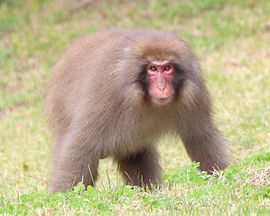

- Makak (Macaca) je rod úzkonosých opic z čeledi kočkodanovití (Cercopithecidae). Je známo celkem 26 druhů, z toho některé jsou již vyhynulé.[1] Makakové se vyskytují v jižní a jihovýchodní Asii včetně ostrovních oblastí (Sulawesi, Malé Sundy, Filipíny, Japonsko), na severozápadě Afriky a jeden druh, magot bezocasý (M. sylvanus), se vyskytuje na Gibraltaru v Evropě. Oblasti Afriky a Evropy nicméně makakové dnes obývají pouze sporadicky, ještě během pleistocénu ale představovali běžnou součást zdejší fauny.[2]
- Makakové žijí v lesích, na pláních i ve skalnatých oblastech.[3] Velká ekologická diverzita mezi jednotlivými druhy způsobuje, že jenom málo druhů má sympatrický výskyt. Jednu z výjimek představují makak lví (M. silenus) a makak kápový (M. radiata), kteří se společně vyskytují v jihoindických lesích.[2] Hybridizace často nastává mezi makakem jávským (M. fascicularis) a makakem rhesus (M. mulatta), v místech, kde se jejich areály výskytu protínají.[4]
- Makakové bývají celkem statné opice, ale stavba těla závisí na každém druhu a prostředí, ve kterém žije. Mezi robustní makaky patří například makak červenolící (M. fuscata) z chladných oblastí Japonska, naopak makak jávský z jihovýchodní Asie je štíhlejší. Přední i zadní končetiny jsou zhruba stejně dlouhé. Jsou přizpůsobeny pohybu na zemi i ve stromoví a mají dobrý úchop. Makakové se pohybují kvadrupedně a objevuje se i šplhání. Lebka nemá žádné specializované znaky. V tlamě mají makakové lícní torby, do nichž si uschovávají potravu.[2][3]
- Makakové tvoří tlupy o různém množství opic.[3] Často se objevují mnohosamcové-mnohosamicové struktury s vysokou socializací. Častá je matrilineární hierarchie, mladé samice v tlupě zůstávají, kdežto mladí samci tlupu opouštějí. Makakové jsou vysoce přizpůsobivé opice, které se mohou živit plodožravě až všežravě. Některé druhy přivikly synantropii. Makakové mají rozvinuté schopnosti učení a napodobování, což z nich dělá inteligentní adaptabilní primáty schopné řešit i složitější problémy.[2] Rozmnožování probíhá sezónně v chladnějších areálech, v tropech celoročně.[3]
- Makakové patří spolu se šimpanzy mezi nejvíce prozkoumané primáty[2] a hrají velkou roli ve vědeckém výzkumu.[3] Oblíbeným druhem je z tohoto pohledu zvláště makak jávský (zřejmě pro svou malou velikost), který je hojně využíván například pro testování léků proti rakovině, diabetu nebo kardiovaskulárním poruchám.[5] V 50. letech 20. století byla pomocí testování na makacích vyvinuta vakcína proti dětské obrně. Probíhají také pokusy s klonováním a roku 2018 zveřejnili čínští vědci, že se makak jávský stal prvním klonovaným primátem pomocí metody přenosu jader somatických buněk (SCNT).[3][6] Makakové rovněž patřili k druhům, které byly opakovaně vysílány do vesmíru.[7] Řada druhů je dnes nicméně následkem lidských činností ohrožena vyhynutím,[2] makak chocholatý (M. nigra) a makak jihomentawajský (M. pagensis) pak patří mezi kriticky ohrožené druhy.
